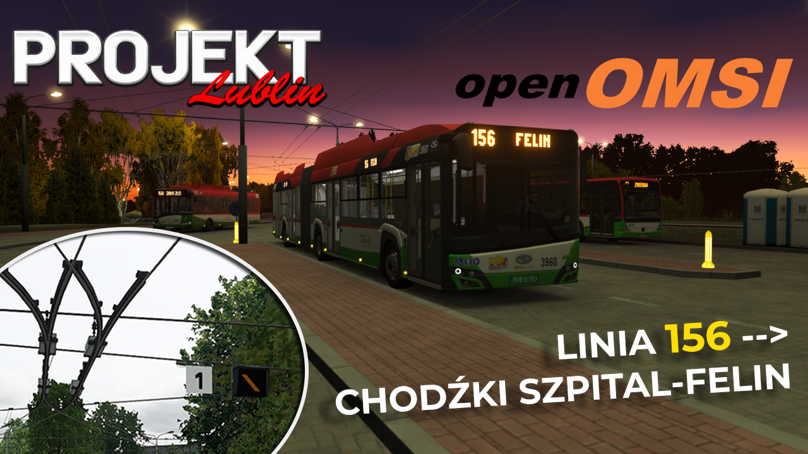
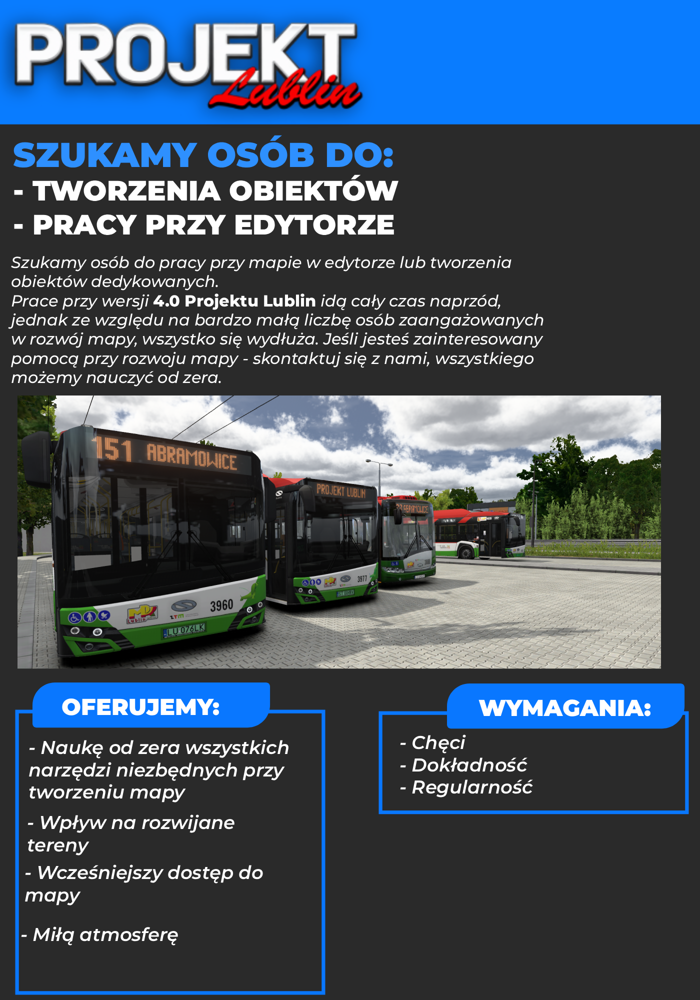
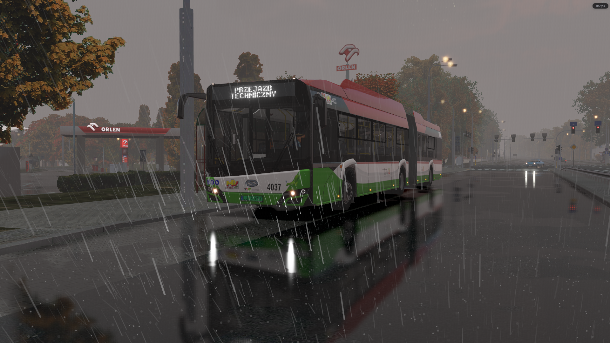

Projekt Lublin
Najnowsze wpisy i informacje o postępach projektu.

Działająca trakcja trolejbusowa-modyfikacja GUMOLIT. Przejazd lini 156 Chodźki Szpital-Felin.
Na naszym Discordzie użytkownik"GUMOLIT" stworzył ekscytującą modyfikację do OpenOmsi na realistycznie działającą trakcję trolejbusową. Modyfikacja dodaje usprawnioną trakcję oraz funkcjonalne wyświetlacze sygnalizujące aktualne ułożenie zwrotnicy. W kolejnej aktualizacji według autora pojawi się funkcja działających kanałów radiowych, a co za tym idzie w końcu przyciski sterowania radiowego zwrotnicami (1-3, 2-4) dostaną realne zastosowanie. Modyfikacja do pobrania na serwerze Discord lub stronie Projektu Lublin

Twórz mapę z nami!
Dzień dobry wszystkim! Szukamy osób do pracy przy mapie w edytorze lub tworzenia obiektów dedykowanych. Prace przy wersji 4.0 Projektu Lublin idą cały czas naprzód, jednak ze względu na bardzo małą liczbę osób zaangażowanych w rozwój mapy wszystko się wydłuża. Jeśli jesteś zainteresowany pomocą przy rozwoju mapy - skontaktuj się z nami, wszystkiego możemy nauczyć od zera. Chętne osoby bardzo prosimy o kontakt przez ticket na serwerze discord.Chcielibyśmy również zorganizować mini projekt poboczny do Lublina jednak to jedynie plany, póki nie dodamy sensownych terenów na mapie
OpenOmsi Projekt Lublin 4.0 151 Węglin-Wojciechowska
Postanowiliśmy przetestować nowy projekt OpenOmsi na mapie Lublina, wyniki są bardzo ciekawe. Mimo, że teren wizualnie może wyglądać identycznie jak na poprzednim filmie to prace nadal trwają. Na Kraśnickiej zostały juz głównie minimalne poprawki i ruch/kostki AI, natomiast ulica Kunickiego zaszła już za skrzyżowanie Kunickiego i Zemborzyckiej (same spliny na ten moment). Niestety rąk do pomocy jest bardzo mało (a właściwie w ogóle ich nie ma) dlatego projekt długo się ciągnie, chętnych do udzielenia jakiejkolwiek pomocy prosimy o kontakt przez "ticket" na serwerze Discord

Linia 151 Projekt Lublin 4.0 odcinek Węglin - Wojciechowska
Pierwszy przejazd po skończonym odcinku 151 Węglin - Wojciechowska. Wszystkie linki w komentarzu pod filmem.

Poradnik obiektów Blender - OMSI2
Prosty poradnik tworzenia obiektów dedykowanych w Blenderze dla OMSI2. Wszystkie linki w komentarzu pod filmem.
Download
Pobierz najnowszą wersję mapy i dodatków.
Archiwum
Poprzednie wersje mapy.
MODY
Modyfikacje stworzone przez społeczność. Szukaj, filtruj i sortuj.
Rozwój
Linia 151
Postęp ukończenia
Zrobione
- Wykonanie Ulic na Al.Kraśnickiej
- Wykonanie wszystkich obiektów na Al.Kraśnickiej
- Ulice na odcinku Targi-Głuska
Do zrobienia
- Ulice na odcinku Głuska-Abramowice
- Wykonanie Obiektów na odcinku Kunickiego-Abramowice
- Modernizacja AL.Racławickich
Galeria

Zwycięska

Węglin

Poczekajka

Szpital Wojewódzki

Szpital Wojewódzki

Wojciechowska
Info
Ziemniak
Główny twórca Projektu Lublin
Edytor, Blender
Pikacz
Główny twórca Projektu Lublin
Edytor, Blender, PR
O mieście
Lublin
Lublin to największe miasto we wschodniej Polsce i stolica województwa lubelskiego. Położony nad Bystrzycą, słynie z malowniczego Starego Miasta, Zamku Lubelskiego z Kaplicą Trójcy Świętej oraz Bramy Krakowskiej. To ważny ośrodek akademicki z kilkoma uczelniami i dziesiątkami tysięcy studentów. Lublin ma jedną z największych sieci trolejbusowych w Polsce, a komunikację miejską obsługuje ZTM Lublin.

.jpg)